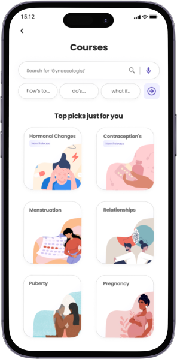
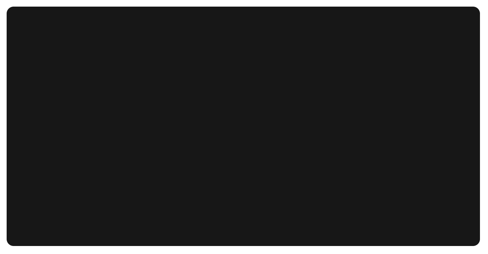

Problem
Absence of a centralized, reliable, & accessible Sex Education Guide.
There is a strong lack of awareness of Sex education, along with a gap in the impartment of comprehensive sex education in schools, colleges, and other institutions in the country to adolescents.
Role
- UX Research
- UX Design
- Product Design
- UI Design and Prototyping
Project Details
- Type: Personal Project (Group)
- Duration: 6 months
- Tools:
Deliverables
- User Research Audit
- Interactive Prototype
- Testing Analysis
Solution Sneak Peak

1
A wide range of age-appropriate content curated and sourced directly from doctors and health professionals, ensuring that children receive accurate and reliable information.
2
Credible and verified content procured from medical professionals
A wide range of age-appropriate content curated and sourced directly from doctors and health professionals, ensuring that children receive accurate and reliable information.
3
Credible and verified content procured from medical professionals
A wide range of age-appropriate content curated and sourced directly from doctors and health professionals, ensuring that children receive accurate and reliable information.

Desk Research
The first step was understanding the crucial aspects of the topic were important to set a right base structure for the project and identify crucial insights that summarize the secondary research
WHAT
Sex education is high-quality Teaching and Learning about various topics related to sex and sexuality.
WHEN
Sex education ideally should be imparted during a student's development ages from 13 to 21.
WHERE
Sex education is provided in Schools/Colleges to spread awareness and educate youngsters.
WHY
Imparting sex education early helps children make Healthier Decisions.
Insights:
1
Topic with Taboo
Teenagers face discomfort during discussions regarding sex and sexuality with parents or elders.
2
Lack of Awareness
Lack of awareness, and overall need and how sex education can be beneficial for teenagers.
3
Absence of Seriousness
Importance of receiving sex education at an early age is paramount and leads to a safe lifestyle.
Source: Books, Magazines, Research Papers, Internet Articles
User Analysis
The user analysis focuses on identifying the target audience and understanding their needs, challenges, and behaviors. This section contains user personas and insights from surveys or interviews.
Stakeholders
Here, we discuss the key stakeholders involved in the project, including clients, end-users, and anyone else who has a vested interest in the project outcome.
Primary Research
This section outlines the primary research conducted through methods like surveys, interviews, or user testing to gather firsthand data. The insights gathered helped shape our design decisions.
How Might We
The "How Might We" section explores potential solutions to the problems identified during the research phase. We present different approaches and ideas that could help solve user challenges.
Ideation
In this section, various ideas are generated through brainstorming sessions. We evaluate and filter ideas to come up with the best solutions that align with project goals and user needs.
Info Architecture
The information architecture section provides a structural breakdown of how the content is organized in the project. It includes sitemaps, wireframes, and user flow diagrams.
Final Concepts
This section showcases the final concepts selected from the ideation phase. We explain why these concepts were chosen and how they solve the key problems identified earlier.
Visual Design
In the visual design section, we highlight the color schemes, typography, and visual elements used in the project. This is where the aesthetic aspects of the project come together.
User Testing
This section explains how the final design was tested with real users. We describe the testing process, user feedback, and how we made improvements based on the results.
Learnings
The learnings section covers key takeaways from the project, what worked well, and areas for improvement. It also includes personal reflections and insights from the team.